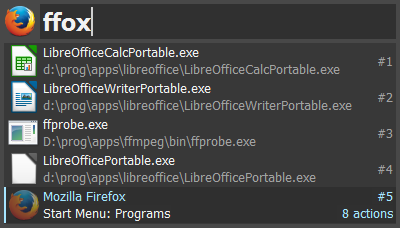

3. First steps¶
The first thing to know about Keypirinha is that you can use almost all of its features by using your keyboard only. Keep that in mind!
3.1. Start Keypirinha¶
Keypirinha is a resident application, which means it directly goes to the background when it is started. You can check application is running by looking for its icon in the system tray’s notification area. It is located next to the system clock on your desktop, which is usually located in the lower-right corner of your main monitor.
3.2. Open the LaunchBox¶
Once Keypirinha is running, press Ctrl+Win+K (by default) to show the
LaunchBox...
3.3. First Search¶
You can now search for the task you wish to execute. Say you want to launch an application, Firefox for example. Start typing its name and it will soon show up in the results list as long as Firefox is installed on your machine.
Once the desired item is selected (you can use the Down, Up,
PgDown and PgUp keys for that), press Enter to launch it.
Keypirinha will then automatically go back to background...
Note
Search is case-insensitive in Keypirinha, thus the FFOX search term is
equivalent to ffox or FfoX.
3.4. Second Search¶
Keypirinha remembers the tasks you execute, so if you want to launch a task you already executed, chances are high that you will only need to type the very first couple of letters of its name to get the task at the top of the results list.
To keep going with our example, we will just type the F letter since it
is the one that naturally comes to our mind when thinking about the name
Firefox.
Notice how the score of the Firefox item is much higher now?
Execute this item again. You will see why in the next section below.

Note
The score numbers you observe on your machine might differ from the ones displayed on that screenshot.
3.5. Associate a Keyword to an Item¶
This is one of the coolest search feature of Keypirinha.
Still with our example, if you happen to launch your Firefox browser a lot, you probably want to keep the number of keystrokes that are required to search and launch it to a minimum.
Keypirinha offers the ability to implicitely associate a keyword with a particular item.
In the last section, we typed the search term F (or f, search is case-
insensitive), before executing Firefox. Keypirinha recorded that
information so every time your search term will be f, the Firefox item
will be pushed up to the top of the results list.
Tip
Association is done at execution time, that is, when you actually launch the item.
Note
You may want to associate f with an other item later. In that case,
just type f and select this other item before executing it.
Keypirinha will change the association implicitely.
3.6. Specify arguments¶
In Keypirinha, some items may accept and even require arguments.
Once you typed your search term and selected the desired item, hit the
Tab key (by default, the Space key also works in this particular
case).
Back to our example, Firefox currently accepts the -preferences command
line option so let’s try typing this one and execute our item.

3.7. Actions¶
Items may have several actions associated to them, or their type.
Search and select the Firefox item again.

At the bottom of the LaunchBox, the status bar indicates that 8 actions are
available for this item. Hit the Ctrl+Enter to visualize these actions
(or the Tab key until you reach the actions list).
Because this particular Firefox item is a file, even a *.lnk file in
our example, the following actions are made available:

Select the one you want and press Enter to execute.
3.8. Maximize the LaunchBox¶
Alt+X (or Win+Up) toggles between normal and maximized
state.
You may need to temporarily extend the size of the LaunchBox sometimes in
order to see the full content of some items in the results list. You can do that
by either pressing Alt+X or Win+Up (toggle).
Note
This feature does not impact the geometry you manually setup in case your
geometry setting is persistent. Hit Alt+X again and your
previous position and size will be restored. CAUTION: If you are in
persistent geometry, do not reposition/resize the window while being
in maximized mode or you will loose your previous geometry.
3.9. Leave a Search¶
May you wish to abort what you were doing on the LaunchBox, press the
Esc key. Press it once, to clear your search, twice to close the
dialog. Note that one time is enough if you didn’t type anything.
If you wish to close the window directly, press Shift+Esc or
Alt+F4.
3.10. Drag and Drop¶
The LaunchBox allows drag-and-drop operations.
For example, a file from Windows Explorer can be dropped to the search box to insert its full path.
Also, items in the results list can be dragged out. The effect of the resulting drop depends on the type of item and the destination application:
- The actual file pointed at by a
FILEitem will be copied to the drop destination. - The text content of the
URL,CMDLINE,EXPRESSIONandERRORitems will be copied to the drop destination. For example:- a
URLitem dropped to your web browser’s window will usually open thisURL - a
CMDLINEitem dropped to a text editor will insert theCMDLINEitself
- a
Tip
As in Windows Explorer, you can drag out FILE items using either the
left mouse button to have a regular behavior, or the right mouse button to
popup a contextual menu at drop destination that allows you to choose the
desired drop effect.
3.11. Clear the history¶
It is possible to clear the history of every executed items by executing the
Clear History item that can always be found in the Catalog. It can be done
from application’s main contextual menu as well (right click on the LaunchBox).
If you just want to erase a single item from the history, just search for
it, select it and press Ctrl+Del. A message dialog will ask you to
confirm the operation.
It is also possible to delete every reference to a specific package from the
history by selecting a result item from this package, then clicking the
Remove parent package from History action from its contextual menu.
Note that no keyboard shortcut is provided here as it is assumed to be rarely
used and to avoid any mistake.
Warning
By clearing the full history, the score subsystem is also reset and you will also loose the internal dictionary of the keywords you associated with items, that is described in the Associate a Keyword to an Item section.
3.12. Configuration¶
See the Configuration section for more info.
3.13. Customize your Catalog¶
Read the Customize your Catalog chapter to discover how you can gain full control over what will be referenced in Keypirinha‘s database and consequently, in search results.
3.14. Extending Keypirinha¶
Despite its apparent simplicity, Keypirinha is a generic tool that is able to welcome a very wide range of features not offered yet by the official bundled plugins. An API allows to extend Keypirinha‘s features to make them fit your needs.
See the Extending Keypirinha (API) section for more info.